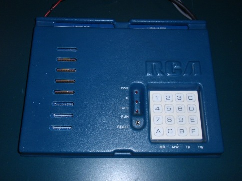
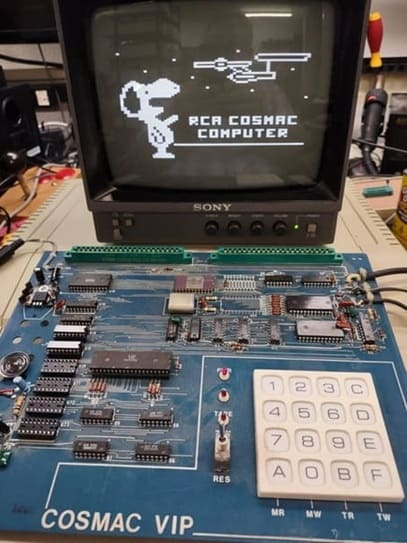

Context
CHIP-8 refers to a numerically-oriented hexadecimal interpretive programming language that was introduced in the 1970s and is used heavily today as practice for writing interpreters.
The context for the CHIP-8 was the COSMAC VIP. COSMAC stood for "Complementary Symmetry Monolithic Array Computer", which described the RCA 1802's CMOS technology. The RCA CDP1802 (aka RCA COSMAC, COSMAC 1802) was an 8-bit CMOS microprocessor introduced by RCA in early 1976. The COSMAC VIP (Video Interface Processor) was introduced in 1977 by RCA.
The VIP was the successor to another system called FRED (Flexible Recreational and Educational Device) from 1974. The VIP was also an evolutionary successor to the COSMAC Elf, which came out in 1976. Contrary to how it's often written, the "Elf" was not an acronym and thus was not "ELF". In the Popular Electronics articles where it was introduced, it's always just the Elf.
The VIP was a single-board computer sold as a kit.
That's an 8.5 by 11 inch (21.6 by 27.9 cm) printed circuit card. You could get a plastic cover for it.
The VIP used the CDP1861 (or CDP1864 for color) video display chip for 64x32 or 64x128 pixel monochrome graphics. It connected to a TV or monitor via composite output or an RF modulator.
The VIP used a non-standard 1.76064 MHz crystal for its "Pixie" video chip to sync with TV signals. Interestingly, the processor's 60 Hz field timing was slightly off-standard, causing compatibility quirks with some TVs.
History
The story begins back in the 1970's when CHIP-8 was created by Joseph Weisbecker. He introduced CHIP-8 in BYTE magazine in December 1978. CHIP-8 is an interpreted programming language written to be run on a CHIP-8 virtual machine.
These virtual machines were included on the COSMAC VIP and the Telmac 1800 microcomputers. The VIP itself shipped with twenty individual games. At the time, CHIP-8 became quite popular and when a VIPER newsletter was created, the first three issues contained the machine code for the virtual machine.
CHIP-8 was ported to many other computers in the late 70s and early 80s, such as the Australia-based computers ETI 660 and DREAM 6800, the latter of which spawned its own VIPER-like newsletter called the DREAMER. CHIP-8 was also ported to the ACE VDU and others. CHIP-8 seems to have died out in 1984. This is the year that the VIPER newsletter folded because of little interest in the COSMAC VIP computer, but it's also the year two major new CHIP-8 extensions were created. One of these was the CHIP-8 AE (ACE Extended) for the ACE. The other was the Dreamcards Extended CHIP-8 V2.0 for the Microbee.
Almost fifteen years after it's creation, a range of graphing calculators came out. Given the nature of the calculator, a graphic display was needed and these were called the HP48 series.
In September of 1990, Andreas Gustafsson released a CHIP-8 interpreter for the HP48SX, specifically to enable game development. This was called CHIP-48.
In 1991, Erik Bryntse released SCHIP (SUPER-CHIP), which was an extension of the CHIP-48 interpreter for the HP48S and HP48SX calculators. This new version had a higher screen resolution (up to 128x64 from 32x64) and several more commands (opcodes) added to the machine language.
It was also in 1990 that CHIP-8 for the Amiga came out. There were also versions for various other systems, such as DOS. The HP-48 calculators were discontinued in 2003 and that largely seems to have been the end of the CHIP-8 line.